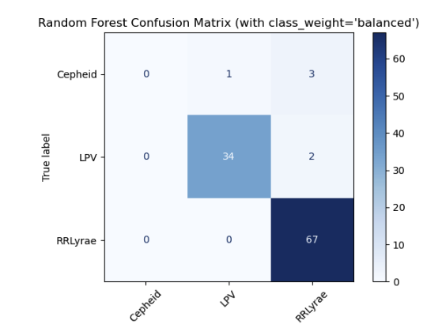

3.5 TB
Large-scale astronomical time-series data processed and analyzed through computational research workflows.
Case Study · Data Science · Statistical Modeling · Decision Systems
Developed analytical workflows for large-scale astronomical time-series data through the NSF-DOE Vera C. Rubin Observatory research program. The project combined statistical exploration, feature engineering, and machine learning to identify and classify variable stars, transforming complex observational data into structured and interpretable research outputs.
Large-scale astronomical time-series data processed and analyzed through computational research workflows.
Classification accuracy achieved by the initial variable star classification model.
Supervised three undergraduate researchers, supporting their technical development and contributions to the research effort.

Large astronomical surveys generate enormous volumes of observational data. Identifying variable stars within these datasets requires researchers to distinguish meaningful variability patterns from noise, incomplete observations, and other sources of uncertainty.
The challenge was not simply processing more data. It was developing a reliable analytical approach to identify relevant signals, extract useful features, and classify astronomical objects in a way that could support further scientific investigation.
Beyond the technical work, I supervised three undergraduate researchers, helping coordinate analytical contributions and support their development within the research environment. This experience strengthened my ability to communicate technical concepts, collaborate across experience levels, and contribute to shared research objectives.
Although the application was astrophysics, the analytical challenges are relevant across many industries. Large datasets are often noisy, difficult to interpret, and too extensive for manual review. Organizations face similar problems when identifying patterns, evaluating opportunities, and deciding where to direct limited resources.
This project reinforced an approach I bring to analytics more broadly: build structured workflows, make analytical methods interpretable, evaluate results rigorously, and turn complex information into outputs that people can actually use.
This experience helped develop my technical foundation in large-scale data analysis, statistical modeling, and collaborative problem-solving. Those capabilities continue to inform my work in business analytics, strategy and operations, and applied decision-support systems.